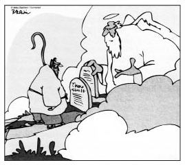

Din filozoflarının hakkında tartışmayı sevdiği Tanrı,
hemen hepimizin bildiği Tanrı değildir. Genel anlamda,
gece boyu başınızda bekleyip sizin için endişelenen Göksel
Baba'dan ziyade, Yıldız Savaşları'ndaki "Güç" gibi daha
soyut tarafta bulunmaya meyilli birisidir.
DIMITRI: Geçen Zeus'la konuşuyordum. Beni kötü etkilediğini söylüyor senin.
TASSO: İlginç. Ben de onun seni kötü etkilediğini düşünüyordum.
DIMITRI: Nasıl kötü etkiliyormuş beni?
TASSO: Kafanın içinde duyduğun sesleri gerçek sanmanı sağlıyor.
Tanrı İnancı
Agnostik, Tanrı'nın varlığının eldeki bilgiler temelinde kanıtlanamayacağını düşünür ama aynı zamanda Tanrı'nın var olma olasılığını da reddetmez. Agnostikler, Tanrı'nın varlığı davasını kapanmış kabul eden ateistlerden bir adım geridedir. Bir agnostik ile bir ateist, "Ben, benim," diyen yanan bir çalıyla karşılaşırlarsa, agnostik gizli kayıt cihazına uzanacak, ateistse omuz silkip şekerlemelerini atıştıracaktır.
İki İrlandalı barda içerken birden masalardan birinde kafa çeken kel ve şişman bir adam dikkatlerini çeker.
Pat: "Şşş... Winston Churchill değil mi lan bu?"
Sean: "Yok yahu. Mümkün değil.Winston böyle bir yere gelip kafa çekmez."
Pat: "Oğlum, ciddiyim ben. Bak, dikkatli bak... Vallaha Churchill bu! Var mısın bahse?
Sean: "Tamam be! Nesine?"
Pat: "On papel."
Sean: "Varım."
Bunun üzerine Pat kalkmış, kel adamın yanına gitmiş: "Sen Churchill'sin, değil mi?"
Adam terslenmiş: "Git başımdan kardeşim!"
Pat arkadaşının yanına dönmüş, "Maalesef," demiş, "asla bilemeyeceğiz."
İşte buna agnostik düşünmek denir.
Ateistler ise başka meseledir. Filozoflar inançlılarla ateistlerin tartışmasının hiçbir yere varmayacağında çok önceleri fikir birliğine varmışlardır. Çünkü her iki taraf da her şeyi farklı yorumlamaktadır. Bir tartışmada, taraflardan birinin, "Aha! Eğer X doğrudur diyorsan Y'nin de doğruluğunu kabul etmelisin," diyebilmesi için ortak zemin gereklidir. Ancak ateistlerle inananlar üzerinde anlaşabilecekleri bir X'i asla bulamazlar. Tartışma asla başlayamaz çünkü her iki taraf da her şeyi kendi bakış açısından görür. Böyle anlatınca biraz soyut kaçabiliyor ama şu fıkra meselenin ayaklarını yere bastırıyor, hatta yanı başınıza getiriyor:
Ufak tefek, yaşlı bir Hıristiyan kadın, her sabah sundurmasına çıkar, "Sana şükürler olsun ya Rabbi!" diye bağırırmış.
Ve yine her sabah komşusu derhal pencereye çıkar ve "Tanrı yoktur!" diye haykırırmış.
Her gün aynı şey tekrarlanıyormuş.Yaşlı kadın, "Şükürler olsun!" diye bağırdıkça komşusu çıkıyor, "Tanrı diye bir şey yok!" diye yanıtlıyormuş.
Gel zaman, git zaman, yaşlı kadın dara düşmüş.Yiyecek bile alamaz hale gelmiş. Bu sefer sundurmaya çıkıp Tanrı'dan yiyecek yardımı dilemeye başlamış. Gene her duasının ardından, "Sana şükürler olsun ya Rabbi!" diye bağırmayı ihmal etmiyormuş.
Derken bir sabah sundurmaya çıktığında bir de ne görsün? Merdivenlerde torbalar dolusu yiyecek! Hemen göğe bakmış ve "Sana şükürler olsun ya Rabbi!" diye bağırmış.
Aynı anda komşusu bahçenin duvarından kafasını uzatıvermiş: "Aha!" demiş, "yiyecekleri sana ben aldım.Tanrı yok işte!"
Yaşlı kadın komşusuna bakmış ve gülümsemiş. Ardından gene göğe seslenmiş: "Sana şükürler olsun ya Rabbi! Sırf dualarımı kabul edip yiyecek göndermekle kalmadın, bir de parasını şeytana ödettin!"
* * *
Sam Harris, 2005 tarihli çoksatar kitabı İmanın Sonu'nda dinsel imana ilişkin gözlemlerini bir stand-up gösterisinde kullanılabilecek biçimde sunmuştu:
"İnançlı bir Hıristiyan'a karısının onu aldattığını, ya da yoğurt yerse görünmez olacağını söyleseniz o da herkes gibi bunların doğru olup olmadığını anlamak için deliller arayacak ve bunlara herkes ne kadar inanırsa o ölçüde inanacaktır. Ama aynı adama başucunda tuttuğu kitabın, içinde yazan her türlü inanılmaz iddiayı kayıtsız şartsız kabul etmediği takdirde onu cehennem ateşinde yakacak görünmez bir tanrısal varlık tarafından yazıldığı söylenmiştir ve bu kişi göründüğü kadarıyla bunu doğrulayacak hiçbir kanıt aramamaktadır." Ama Harris, ateistliğin kötü yanını yazmayı atlamıştı: Ateistlerin orgazma ulaşırken adını haykıracak kimseleri yoktur.
* * *
On yedinci yüzyıl Fransız matematikçi ve filozofu Blaise Pascal Tanrı'ya inanmaya veya inanmamaya karar vermenin, temelde bahse tutuşmak olduğunu öne sürmüştü. Tanrı'nın varlığına inanmayı seçmemiz ve her şey bittiğinde Tanrı'nın olmadığının ortaya çıkması büyük bir sorun değildir. Eh, tabii Yedi Ölümcül Günah'ı şöyle doyasıya yaşayamadan gitmiş oluruz ama bu, diğer seçenekle karşılaştırıldığında önemsizdir. Öte yandan Tanrı yoktur der ve sonunda kendisiyle karşılaşırsak hapı yuttuk, yani ebedi saadeti kaçırdık demektir. Bu nedenle, der Pascal, Tanrı varmış gibi yaşamak stratejilerin en iyisidir. Bu tavır, akademik çevrelerde "Pascal'ın Bahsi" adıyla bilinir. Biz sıradan insanlarsa buna kısaca "neme lazım" deriz.
Pascal'dan ilham alan yaşlıca bir kadın, içinde 100.000 dolar bulunan bir çantayla bankaya girer ve bir hesap açtırmak istediğini söyler.Temkinli banka müdürü kadına parayı nereden bulduğunu sorar. "Bahisten," der kadın, "bahiste çok iyiyimdir."
Şaşıran müdür, "Ne tür bahisler?" diye sorar.
"Her tür," der kadın. "Mesela hemen burada, yarın öğlen on ikide sağ kalçanızın alt tarafında bir kelebek dövmesi bulunacağına 25.000 dolarına bahse girebilirim."
"Girerdim bu bahse," der müdür. "Ama bu kadar saçma bir bahisle paranızı almak istemem."
"Eh," der kadın, "bahse girmezseniz ben de gider paramı başka bankaya yatırırım."
"Yok, yok, acele etmeyin, canım," der müdür. "Tamam, bahse varım."
Kadın ertesi gün öğlen vaktinde, yanında tanıklık için avukatıyla gelir. Banka müdürü arkasını döner, pantolonunu indirir ve bakmalarını söyler. "Tamam," der kadın, "yalnız kesin görebilmemiz için biraz daha öne eğilir misiniz, lütfen?" Müdür iyice eğilir, kadın onaylar ve çantasını açıp 25.000 doları saymaya koyulur.
Bu arada avukat müdürün masasının karşısındaki koltuğa çökmüş, başı ellerinin arasında kara kara düşünmeye dalmıştır.
"Bunun nesi var?" diye sorar müdür.
"Kaybettiği için üzgün," der yaşlı kadın. "Buraya gelirken sizin bize saat on ikide kıçınızı açıp göstereceğinize dair 100.000 dolarına iddiaya girmiştik."
Bahiste riski düşürmekle dalavere çevirmek arasında çok ince bir çizgi vardır. Aşağıdaki yeni Paskalcı stratejiye bir göz atalım:
Adamın birisi, omzunda papağanıyla Pazar ayinine katılmış. Cemaatten birçok kişiyle papağanının ayini vaizden daha iyi sunacağına bahse girmiş. Ayin başladığında papağanın gıkı çıkmamış. Ayinden sonra eve dönerlerken adam kaybettiği paralar yüzünden başlamış papağana verip veriştirmeye. Papağan beklemiş ve adam sustuğunda, "Akılsız," demiş, "kafanı kullansana! Noel ayininde paranın hasını götürebileceğiz şimdi!"
Papağan belki de önemli bir noktaya parmak basmaktadır. Belki Pascal'ın kumarında, kutsal günlerde golf oynayacak şekilde biraz dalavere çevirip Tanrı'yı memnun edebiliriz! Varsa yani... Hiç değilse çabaladığımızı bilecektir.
Deizm ve Tarihsel Din
On sekizinci yüzyıl filozofları, eğer kuşkucu değilseler genellikle Deistti; yani uzak ve gayrı şahsi olan "filozofların Tanrısı"na, kişiden çok bir güce benzeyen, sırların itiraf edildiği bir sırdaştan çok bir saat ustası gibi olan bir Yaradan'a inanırlardı. Ortodoks Yahudiler ve Hıristiyanlar buna karşıydı. Bizim Tanrı'mız, diyorlardı, sadece bir saat ustasından ibaret değildir. O, tarihin efendisidir; Mısır'dan Çıkış'ta (Exodus), çölde yürüyüşte ve Vaat Edilmiş Topraklar'a yerleşildiğinde yanımızdaydı. Bir başka deyişle, "dertte ve tasada hep yanımızdaydı."
Yahudi bir kadın, kumsalda oynayan torununu izlerken dev bir dalga gelir ve çocuğu kaptığı gibi götürür. Kadıncağız, "Lütfen tanrı'm," der, "tek torunum o benim. Kurtar onu, yalvarırım."
Derken kocaman bir dalga daha gelir ve çocuğu sağ salim kıyıya bırakır.
Kadın torununa bakar ve göğe seslenir: "Şapkası da vardı ama!"
Saatçiye söyleyin bakalım bunu!

"Her ay yeni bir dizi emir gelecek. Canın ne zaman
isterse aboneliğini iptal edebilirsin ama ilk diziyi
geri vermen gerekmiyor. Hediyemizdir."
Teolojik Ayrımlar
Din filozofları Büyük Sorularla uğraşırken (Mesela, "Tanrı var mı?") teologlar daha ufak meselelerle meşguldür.
* * *
Yirminci yüzyıl filozofu ve teologu Paul Tillich din felsefesiyle teoloji arasında varsayılandan daha fazla fark olduğunu düşünüyordu. Ona göre filozof, Tanrı ve Tanrı'yla ilgili şeyler hakkındaki gerçeği mümkün mertebe nesnel açıdan ararken, teolog zaten "inancın elindedir" ve kendisini bu inanca adamıştır. Başka bir deyişle din filozofu, Tanrı ve dine dışarıdan, teologsa içeriden bakar.
* * *
Teolojide, "Ruh, Baba'dan mı yoksa Baba ve Oğul'dan mı çıkar?" türü feci ağır meseleler üzerine hizipler açılmıştır. Ruhban sınıfı dışındaki kişilerin teolojik farklılıkları anlamak için ayrıntılı bir kılavuza ihtiyaç duyduğu açıktır. Tanrı'ya şükür, komedyenler her daim yardıma hazırdır. Anlaşıldığına göre, bir kişinin dini inancını belirlemede anahtar kimi tanıyıp tanımadığıdır:
Yahudiler, İsa'yı tanımaz.
Protestanlar, Papa'yı tanımaz.
Baptistler içki dükkânında birbirlerini tanımaz.
Son satır gayet faydalı bir öğüt içerir: balık tutmaya gidecekseniz bir Baptisti davet etmeyin çünkü biranızın tümünü içecektir. Ama iki Baptist davet ederseniz, biranız size kalır.
Mezhepler arasındaki ayrımı kavramanın bir diğer yoluysa kimin hangi tavrı ilahi gazap nedeni olarak gördüğüdür: Katolikler için bu, Pazar ayinini kaçırmaktır. Baptistler için dans etmek, Episkopaller içinse salatayı tatlı çatalıyla yemektir...
Ama işin ciddi tarafını atlamayalım. Mezhepler arasında çok önemli öğreti farkları vardır. Örneğin "Lekesiz Gebelik" yani Hz. Meryem'in, Tanrı'nın oğlunu doğurabilmek için ilk günahtan ari doğduğu doktrinine sadece Katolikler inanır.
İsa sokakta yürürken kalabalık bir grubun bir fahişeyi taşladığını görür. Hemen araya girer ve "Aranızda günahsız kim varsa ilk taşı o atsın!" der. Aynı anda bir taş vızıldayarak yanından geçer. Hz. İsa kalabalığa döner: "Anne?"
Mezheplerle ilgili herkesin gözdesi olan şakalarsa elbette Katoliklerin karşı reform esprileridir. Mesela şu fıkra, neredeyse herkes tarafından bilinir:
Maddi sıkıntıda iyice dibe vuran adam Tanrı'ya piyangoda kazanmak için her gün dua etmektedir. Aradan günler, haftalar, aylar geçer fakat hiçbir şey kazanamaz. En sonunda tepesi atar, "Bize 'kapıyı çalın, açılacaktır'; 'Arayınız, bulacaksınız,' diyen sen değil misin? Dua üstüne dua ediyorum şurada ama hâlâ kazanamadım piyangoyu!" diye haykırır.
Aynı anda gökten gür bir ses duyulur: "İşin hepsini bana bırakma evlâdım. Bilet al!"
Bu adam mutlaka, tıpkı sadece Tanrı'nın lütfüyle kurtulabileceğimizi, kurtuluşa erişmek için kendi başımıza hiçbir şey yapa mayacağımızı düşünen Martin Luther gibi bir Protestandır. Yukarıdaki fıkrada Tanrı, Protestan reformuna karşı Katolik reformu gündeme taşımaktadır. Esasen bu fıkranın kökeninin 1545'te toplanan Trent Konseyi'ne dayanması çok mümkündür. Söz konusu konseyde kurtuluşun lütuf ve hayırlı işlerin, başka bir deyişle dua etmek ile bilet almanın birleşiminden geldiği kabul edilmiştir.
Mezheplerin ortak noktası, her birinin kendi teolojisinin Cennet'e giden en kestirme yol olduğuna inanmasıdır
Adam Cennet'in kapısına gelir. Aziz Peter sorar: "Mezhep?"
"Metodist," der adam. Aziz Peter elindeki listeye bakar ve "Yirmi sekiz numaralı oda," der. "Yalnız sekiz numaranın önünden geçerken sessiz ol."
Bir başka adam gelir.
"Mezhep?"
"Baptist."
"On sekiz numara.Yalnız sekiz numaranın önünden geçerken sessiz ol."
Bir adam daha gelir.
"Din?"
"Yahudi."
"On bir numaraya git.Yalnız sekiz numaranın önünden geçerken sessiz ol."
"Farklı din ve mezhepler için farklı odaların bulunmasını anlıyorum," der adam. "Ama neden sekiz numaranın önünden sessizce geçecekmişim?"
"Sekiz numarada Yehova Şahitleri var," der Aziz Peter. "Kendilerinden başkası buraya gelemiyor zannediyorlar."
On dokuzuncu yüzyıl Alman filozofu Arthur Schopenhauer'in Budizm'i felsefi yönden keşfettiği söylenir. Schopenhauer, kendisinden iki bin yıl önce Gautama Buda'nın yaptığı gibi, yaşamın tümünün ıstırap çekmek, mücadele etmek ve hüsran olduğunu, tek kaçışınsa tevekkülde, yani arzunun reddi ve yaşama iradesinin yadsınmasında yattığını düşünmüştü. Öte yandan, hem Buda hem Schopenhauer, bu feragatin tüm varlıklara yönelik bir merhamet doğuracağı ve azizliğe uzanacağı fikrindeydi. Değiş-tokuş hesabı...
Schopenhauerci kötümserliğe yönelik birçok fıkra vardır:
İki kadın parkta bir bankta oturmaktadır. Sessiz geçen birkaç dakikanın sonunda kadınlardan biri, "Of!" der.
Diğer kadın yanıtlar: "Of!"
"Tamam," der birinci kadın, "çocuklardan başka konuya geçelim."
Arthur Schopenhauer ve Buda için yaşam sürekli bir hüsran ve sıkıntı döngüsüydü. İstediğimizi elde edemediğimizde hüsrana uğruyor, elde ettiğimizdeyse sıkılıyorduk. Ve her ikisi için de hüsranların en büyüğü, kurtuluşun el uzatılsa tutulacak mesafede belirivermesiydi.
Bir zamanlar, hiç kabahati olmamasına rağmen bir büyücünün lanetine uğramış bir kral yaşarmış. Lanet yüzünden her sene sadece bir sözcük konuşabiliyormuş. Ancak biriktirme şansı varmış; yani bir sene boyunca hiç konuşmazsa, bir sonraki sene içinde iki sözcük söyleyebiliyormuş.
Kırk yaşına dek hiç evlenmeyen bu mutsuz kral bir gün güzeller güzeli bir prensesle karşılaşmış ve kıza delice tutulmuş. Bir yıl sabredip kıza "Aşkım benim," demeye karar vermiş.
Ancak kral ikinci yılın sonuna doğru kıza onu gördüğü ilk günden beri sevdiğini de söylemeyi kafasına koyunca altı yıl daha beklemeye karar vermiş. Sekiz yıllık suskunluğun sonunda prensesle evlenmek istediğini anlamış. Ama bunun için iki yıl daha lazımmış.
Nihayet on birinci yıla ulaştığında prensesi elinden tutup sarayının en romantik köşesine götürmüş. Önünde diz çökmüş ve "Aşkım benim," demiş, "seni ilk gördüğüm günden beri seviyorum. Benimle evlenir misin?"
"Efendim?" demiş prenses elini kulağına götürerek.
Herhalde Schopenhauer'in bekleyebileceği yanıtların en kötüsü budur.
Japonlar ve Çinliler, altı ve yedinci yüzyıllarda Budizm'in, bugün bir Rönesans yaşayan bir altkolunu geliştirmişlerdir: Zen. Batı düşüncesinin bakış açısından bakıldığında Zen felsefesi bir çeşit anti-felsefedir. Zen üstadının gözünde akıl, mantık, duyusal veriler —Batı felsefesinin üstüne kurulduğu ne varsa— birer yanılsama ve nihai aydınlanmadan sapmadır. Peki, insan nasıl aydınlanır?
Şu iki soruyu düşünelim:
• Bir ördeğin arasındaki fark nedir?
• Tek elin çırpılmasından hangi ses çıkar?
Her iki soru da, felsefe çevrelerinde "Ha?" diye bilinen yanıtları çağırmaktadır. Anlaşılmazlar. Yani mümkün yanıtın ne olabileceğini anlayamayız. Ama bu sorulardan ilki klasik okul geyiğiyken diğeri klasik bir Zen koanıdır.
Koan, bir Zen üstadı tarafından öğrencisine anlatıldığında öğrenciyi satori —ani aydınlanma— adıyla bilinen bir bilinç haline sürükleyecek bilmece veya öykücüklere verilen addır. Bu bilinç halinde gündelik yaşamın her türlü ayrımı ve değeri buharlaşmakta, kişi evrenin ve evrendeki tüm deneyimin birliğine yönelik bir kavrayışa ulaşmaktadır. Tek elin çırpılmasından çıkan ses sorusuna verilecek Zen yanıtı, "Havanın yatay bir yüzey üzerinde sürtülmesinin üreteceği hafif mırıltı," türünden bilimsel bir yanıt değildir. Söz konusu bilmeceye verilecek Zen yanıtı, "Vay!"dır. Koanlar kişiyi aydınlığa, zihnini imkânsız fikirlerle karşılaştırarak ulaştırır. Espriyi kaptığınız anda, küt, satori'desinizdir.
İşte herkesin pek sevdiği bir koan:
Ben aydınlanma peşine düşmeden önce dağlar, dağdı; nehirler nehirdi.
Ben aydınlanma peşindeyken dağlar, dağ değildi; nehirler nehir değildi.
Ben satoriye erdikten sonra dağlar, dağdı; nehirler nehirdi
Biz Batılılar, aydınlanmanın çok uzak, garip, kusursuz bir bilinç haline ulaşma meselesi olmadığına dair genel fikri anlıyoruz. Anlamakta zorlandığımız —ve dağ meselinin koanik özünü oluşturan— aydınlanmaya ermiş bilincin aynı anda nasıl hem aşkın hem sıradan olabileceğidir. Böyle bir şey ya hissedilir ya hissedilmez ve biz Batılılarda bu his, çoğunlukla yoktur.
Bu durum ortaya şu eski ördeğin arasındaki fark geyiğinin bir tür Batı koanı olarak kabul edilip edilemeyeceği sorusunu çıkarıyor.
Sonuçta söz konusu espri mantıksızlık ve saçmalık üzerine kuruludur ve aklı karıştırmaktadır. Ama bu bilmeceye verilen yanıtlara —koanlar için asit testi— bakarsak yanıt, hayır olmak durumundadır. Bir gülümseme, bir kıkırdama belki ama satori? Hayır.
Heyhat, mesele kültür meselesidir belki: Biz Batılıların çoğu, Doğu'nun "bir şeyi anlayamıyorsan, aydınlanma yolundasındır" kavrayışını anlayamayız — bu da bizi şu uyduruk Batı koanıyla baş başa bırakır:
Dondurman varsa veririm sana.
Dondurman yoksa alırım senden.
Al sana dondurmalı koan.
* * *
Başarılı koanlar Zen ilminin parçası olmuş, nesilden nesle aktarılmıştır. Örneğin, yedinci yüzyıldan Altıncı Zen Üstadı Huineng, şu ünlü soruyu sormuştur: "Orijinal yüzün sen doğmadan önce neye benziyordu?" 'Zen Üstadı' lakabıyla tanınan Los Angeles Lakers çalıştırıcısı Phil Jackson ise şu katkıyı yapmıştır: "Buda'yı açıkta gördüğün anda pası ver."
* * *
Dangalaklığın Felsefesi
"Airhead" denilen boş kafalılık ya da dangalaklık felsefesinin 1960'ların sonundaki sahneye çıkışı, Harvard profesörü Timothy Leary'nin aydınlanmaya giden yolun büyülü mantarları yutmaktan geçtiğini öne sürdüğü dönemle çakışmıştı. Daha sonra "Yeni Çağ
Felsefesi" adını alan bu akım, kadim Doğu felsefeleriyle astroloji, Tarot kartları ve kabala gibi bazı ortaçağ inançlarının bir karışımıdır. "İkiliğimle birim" ya da "Süreç'e güvenmeyi öğrendiğimden artık silah taşımam gerekmiyor" türü önermeler Yeni Çağ felsefesinin önemli bir parçasıdır. Aklımıza 1800'lerin başlarında bir okumasının ardından İngiliz şair Samuel Taylor Coleridge'e yanaşıp "Bay Coleridge, evreni kabullendim!" diyen kadın geliyor. Bu cümle üzerine şair gözlüklerini burnunda biraz aşağı kaydırıp üzerinden bakmış ve "Aman Tanrı'm, hanımefendi!" demiştir, "iyi ki etmişsiniz!"
Neyse ki Yeni Çağ düşüncesinin sığlığını bize gösterecek bolca espri var:
Ampul değiştirmek için kaç Yeni Çağcı gerekir?
Hiç. Daha yeni "Karanlığa Uyum" adlı destek grubunu kurdular.
Dünya dışı varlıkların bizi ziyaret etmekle kalmayıp akşam yemeği ve baş başa romantik saatler geçirmek için gemilerine davet ettikleri inancı Yeni Çağ tayfasının güncel veya çağdaş denebilecek tek tarafıdır. Bu tür Yeni Çağ inançlarını mantıksal uç noktalara taşımak içinse bir espri ustası yetecektir:
Bir Marslı, Brooklyn civarına acil iniş yapmak zorunda kalır. Arızayı araştırdıktan sonra gemisi için çok önemli bir parçanın,"troover"ın hasar gördüğünü anlar. Biraz dolanır ve bir şarküteriye girer, tezgâhtaki adama nereden bir troover bulabileceğini sorar. Adam,"Nasıl bir şey bu?" diye sorunca
Marslı tarif etmeye başlar:
"Yuvarlak... Böyle dışı sert, içi yumuşak... Ortası deliktir..."
Mezeci, "Ha," der, "Tarif ettiğiniz şey, bagela[10] benziyor... İşte, bunu mu diyordunuz?"
Marslı, mezecinin uzattığı bagela bakar ve "İşte bu!" der. "Siz ne yapıyorsunuz bunları?"
"Valla," der mezeci, "size inanılmaz gelebilir ama yiyoruz."
"Ne?" der Marslı hayretle. "Troover mı yiyorsunuz siz?"
"Hı-hı. Alın, deneyin bir..."
Marslı kuşkuyla bakar ama mezecinin uzattığı bageldan bir ısırık alır. "Hey," der ardından, "biraz krem peynir sürsen daha lezzetli olur bu!"
Yeni Çağ tayfasının malzemelerinden bir diğeri de, durugörü türü parapsişik olgulardır. Birçok Eski Çağcı —yani rasyonel düşünenler— bu tür olgular için her daim akla yatkın bir açıklama bulunacağına inanmayı sürdürmektedir.
"Dedem hangi yılın hangi aynının hangi gününün hangi saati öleceğini biliyordu."
"Vay! Ermiş bir kişi... Nasıl becermişti peki?"
"Hâkim söylemişti."
Ha!
* * *
DIMITRI: Bir sorum var hâlâ: Şimdi, Zeus yoksa Poseidon hâlâ onun kardeşi midir, değil midir?
TASSO: Valla Dimitri, sen ya aydınlanmış bir Budistsin ya da birkaç tahtan eksik.